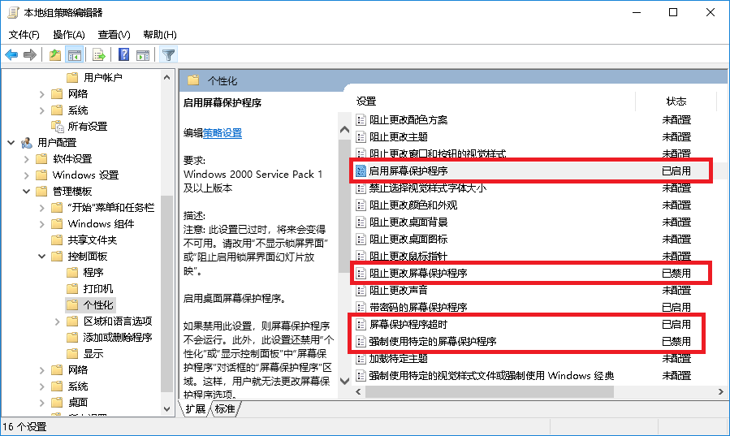
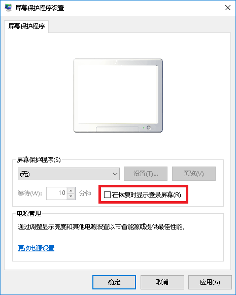

软件下载
校园网联合镜像站
https://mirrors.cernet.edu.cn/
应用软件：https://mirrors.cernet.edu.cn/app
操作系统：https://mirrors.cernet.edu.cn/os
字体：https://mirrors.cernet.edu.cn/font
国内itellyou
Windows自启动管理-SystemInternalsSuite-Autoruns
使用SystemInternalsSuite中的Autoruns64工具进行启动项管理。注意以管理员身份运行。
下载地址：
https://learn.microsoft.com/en-us/sysinternals/downloads/sysinternals-suite
https://download.sysinternals.com/files/SysinternalsSuite.zip
请使用多线程下载工具/使用加速器访问。
Windows右键菜单管理
使用ContextMenuManager管理右键菜单：
https://bluepointlilac.github.io/ContextMenuManager/
国外GitHub：https://github.com/BluePointLilac/ContextMenuManager/releases
国内gitee：https://gitee.com/BluePointLilac/ContextMenuManager/releases
或直接到注册表修改：
HKEY_CLASSES_ROOT找对应的文件格式，删除/修改。其中，*是目录/桌面背景右键菜单的内容。
将鼠标右键菜单分文下三种情况：
右键空白区域（分为桌面空白区域和其他文件夹下空白区域）
右键文件夹
右键文件（分为所有文件和某类型文件两种）
参见：https://blog.csdn.net/qq_34769162/article/details/117068877
Windows软件强力卸载-GeekUninstaller
使用免费版即可。
小技巧：Win10、Win11按SHIFT重启，即可选择U盘启动/进入BIOS（UEFI）
ESXi7 VMFSL虚拟内存占用120g空间
1、开始安装ESXI7.0，第一次进入安装时，抢在倒计时5秒之内 按shift + O 【是字母不是数字0】如下图：
2、在cdromBoot runweasel后输入autoPartitionOSDataSize=5120 【注意大小写】【注意有可能开头默认非cdromBoot runweasel，如果不是的话需要自己修改】
5120表示指定OSDataSzie为5GB，再按enter回车进行正常安装即可；当然了，如果觉得5G小了点，那就分8G 10G都可以。
神州网信政府版windows10下载
点击此处直接获取：
暂无结果！
或直接到官网下载，序列号：
https://download.cmgos.com/oem/login
06010000000000502-2000-1136705022000113670502-2000-1136405022000113640101-1901-448250101190144825
或直接POST接口：
https://download.cmgos.com/api/download/oem/list/
xxxxxxxxxx{ "is_sn": "true", "device_sn": "null", "sn": "0502211111111"}
Win10神州网信政府版 取消反人类的设定
https://www.cnblogs.com/night-ray/p/14838652.html
1. 取消Ctrl+Alt+Del打开启动屏幕
Win + R调出运行窗口键入gpedit.msc打开组策略，找到计算机配置->Windows设置->安全设置->本地策略->安全选项
找到交互式登录：无须按ctrl+alt+dle，设置为已启用即可。
2. 安装.NET Framework 3.5
由于该系统比较特殊，所有系统联网的部分都被魔改了，所以也就无法自动系统更新，也就无法正常安装.NET Framework 3.5。
神州网信官方提供了手动安装教程和文件，使用dism方式进行安装。
官网地址：官网链接
分流：蓝奏云
举例：将.cab后缀文件拖到C:\sxs目录下，然后以管理员方式打开PowerShell或Cmd，直接粘贴语句dism.exe /online /enable-feature /featurename:NetFX3 /Source:c:\sxs回车等待就好了。

3. 解禁麦克风和摄像头限制
3.1 官方工具
神州网信官方推出的工具，操作很简单。
官网地址：官网链接
分流：蓝奏云

3.2 系统设置
gpedit.msc打开组策略->计算机配置->管理模板->windows组件->应用隐私
允许Windows应用访问相机---未配置，或强制允许。允许Windows应用访问麦克风---未配置，或强制允许
4. 取消强密码
gpedit.msc打开组策略->Windows设置->安全设置->账户策略->密码策略
密码必须符合复杂性要求禁用，密码长度最小值、最短和最长使用期限都改成0，重启再次输密码登陆到桌面后，双击ctrl+alt+del点更改密码，输入旧密码，两次新密码不用输入，即清空了密码。
5. 解除屏幕保护程序限制（选项灰色不可更改）
gpedit.msc打开组策略->用户配置->管理模板->控制面板->个性化，将所有与屏幕保护程序相关的选项改为未配置即可。

另一种办法，注册表regedit定位到HKEY_CURRENT_USER\Software\Policies\Microsoft\Windows\Control Panel\Desktop右栏删掉下表提到的键。
{kind=link}
| 键名 | 类型 | 说明 |
|---|---|---|
| ScreenSaveActive | REG_SZ | 开启屏幕保护程序 |
| ScreenSaverIsSecure | REG_SZ | 锁定屏幕保护程序设置 |
| ScreenSaveTimeOut | REG_SZ | 屏幕保护程序超时时间 |
| SCRNSAVE.EXE | REG_SZ | 修改屏幕保护程序路径 |
6. 休眠后直接进入桌面
gpedit.msc打开组策略->计算机配置->管理模板->控制面板->个性化，如下图所示，将不显示锁屏启用，其他选择未配置。
 运行窗口键入
运行窗口键入netplwiz。
 先选中要设置的账户，再取消选中“要使用本计算机，用户必须输入用户名和密码”选项。
应用后会出现一个要求输入用户名和密码的菜单，输入确定。
然后，在
先选中要设置的账户，再取消选中“要使用本计算机，用户必须输入用户名和密码”选项。
应用后会出现一个要求输入用户名和密码的菜单，输入确定。
然后，在屏幕保护程序设置里，取消在恢复时显示登录屏幕。

如果是灰色的，按上述操作5即可解除。
{kind=link}
老电脑BIOS升级nvme & win7 上傲腾 实战设置 2022年8月30日
https://zhuanlan.zhihu.com/p/559493845
老电脑配置：
E3 1230v2——华擎z77pro4主板——pcie x1转nvme转接卡——win7系统，经过我的设置，即可在win7上任意使用傲腾硬盘或当启动系统盘，不受英特尔故意搞的所谓cpu6代以上、主板、系统win10以上的限制，随意拿捏。
设置思路：
由于我电脑是win7和3代cpu老硬件，完全不符合英特尔官方上傲腾的强制要求，再加上英特尔自己有rst快速存储（raid 0）、IntelCacheAccelerationSoftware（cas内存加速，作用跟primocache一样）、傲腾内存加速和傲腾混合硬盘加速驱动等各种实现方法不同但功能交叉的软件，且大部分软件或驱动都不支持win7使用，乱七八糟看着头疼。
tips：最好不要用rst快速存储，他实际上是将傲腾和你加速硬盘组成raid0，把两块硬盘捆绑成了一块硬盘来用，这样的坏处有3——1.你只能加速1块机械硬盘，无法加速固态，2.一旦傲腾失效，你机械盘的内容全丢（当然可以拔下来插其他电脑复制），这两天搜到了很多傲腾失效导致数据丢失的案例，3.卸载的时候还要解绑傲腾和机械，清除元数据，否则傲腾无法使用，我也看到很多二手买家买回来傲腾怎么折腾都没用的，就是上家没有清除元数据导致。
非要用英特尔官方软件的话，推荐使用cas，但1.页面难找2.下载需要注册一堆烂七八糟信息3.自家ssd免费但不免费傲腾，其他家收费，且仅支持win10以上。关键在于他用的方式与primocache 二缓是一样的。
CAS官网页面：https://www.intel.com/content/www/us/en/software/intel-cache-acceleration-software-performance.html
于是我只要求傲腾实现nvme固态盘的功能，然后用primocache设置L2二级缓存到傲腾固态即可实现全系统加速。
关键问题在于，win7+转接卡，不认盘！
第一步，主板bios注入nvme模块
这一步非必须，这一步非必须，这一步非必须，重要的事说3遍，且有重大操作风险，严重情况可能导致你主板挂掉，可以用编码器救，但手残党请自动绕路。
最开始不认盘我以为是主板不识别pci设备，于是想着要刷nvme模块，后来才发现只是由于win7没有傲腾的驱动。但这一步我还是做了，毕竟以后就可以用任意nvme硬盘做系统盘。
使用工具有两种，mmtools或UEFITool来制作bios。
我个人使用的mmtools，主要原因是uefitool只搜到了一篇教程，而那篇教程里面讲到“有一个“卷可用空间”，在这里点右键选择“在下方插入”时，我右键点不动，没有反应。只能在“用户界面分段”插入nvme模块，与原文不一致，为保严谨，弃用。
据说UEFITool会自动压缩bios空间来插入20.3k大小的nvme完整模块，有试验成功的小伙伴可以回来报个道。
UEFITool教程地址：https://zhuanlan.zhihu.com/p/57240058
mmtools教程地址：https://www.bilibili.com/read/cv4475152
我在他的基础上讲几个点，详细刷机工具会打包在结尾，是我搜集到的各种工具。

1.前期准备，系统最好用uefi引导，硬盘模式选择ahci，csm开，不要选傲腾rst，已有硬盘全部用diskgenius无损转换成gpt分区（显示为GUID分区，自行百度）。如果你系统是ghost或精简版或bios引导的mbr系统，强烈建议重装个完整系统，减少大部分未知错误。
推荐：
秋无痕Win7SP1(64位旗舰版)增强版V202003(USB3+NVMe+UEFI)
https://cloud.189.cn/t/YZnuQb3Q7B7z (访问码:dqw7)
该系统已经注入usb3.0和nvme和uefi驱动，最新版2020年打包，来自于秋无痕论坛，侵删。（但他仍然没识别傲腾，普通nvme硬盘没问题）
2.下载你对应主板的bios
3.由于有网友说中文版mmtool有几率不读条，所以我使用的英文版，步骤一样
4.加载原版bios，注意要下拉选择所有文件才看的到你的bios
5.往下拉找到CSMCORE，再点击模块文件那里的浏览，插入Nvme模块文件NVMeExpressDxE.ffs，，由于我bios芯片容量不够，所以插入的是3k的压缩版，如果你用的是UEFITool，这里直接插入20k的原版会自动压缩。这里直接用他的图。
6.插入完成会卡一会，然后按照原教程检查nvme模块在不在，然后选择另存映像，英文版位置跟中文一样，对照着来
7.输出文件的时候跟他不一样，由于我主板后缀是.00，为了保证成功率，我将注入好的固件改名跟原版bios文件名一致——Z77PRO42.00。如果你主板是华硕.cap之类的，请百度相关绕过系统检测rom的帖子。
8.然后将改好的固件按照对应主板的要求更新即可。
9.更新完后，如果你插有nvme硬盘，系统启动里可以看到pata选项，这个就是nvme硬盘已经被主板正确识别。
至此，你的电脑可以在nvme盘里直接装系统了，win10以上无脑装，win7选用自带uefi+nvme驱动的即可。
第二步 win7 上傲腾
以上操作仍然没解决我win7系统看不到盘的问题，思来想去，莫不是缺驱动？
设备管理器里显示一个大大的黄感叹，pci设备。
于是尝试找各种傲腾驱动，但均因为win7而无法安装。
无奈之下，想到傲腾还有混合固态，找固态nvme驱动试试？
于是，终于让我找到了英特尔为win7留的最后一个nvme固态驱动，激动万分
地址：https://www.intel.cn/content/www/cn/zh/search.html?ws=recent#q=NVMe&sort=relevancy
win7地址：
下载后发现setup_nvme.exe仍然检测不到傲腾无法安装，原因很简单，因为傲腾m10是 “内存”而不是硬盘。又陷入死胡同？no，往下看。
1.我们右键解压client-64bit_f6flpy.zip驱动包
2.打开我的电脑设备管理器，找到那个黄色pci设备，右键选择更新驱动设备，选择浏览计算机以查找驱动
3.浏览打开刚才解压的文件夹，选择下面的从计算机列表选择
4.打开列表，左边厂商选择intel，右边选择带傲腾标识的任意硬盘，我这里选的900p
5.下一步，结束战斗，你会看到黄色pci没有了，存储控制器里多了一个900p系列，打开系统磁盘管理或者diskgenius将傲腾格式化，系统里终于出现久违的13.4G硬盘空间，喜大普奔。

6.虽然被识别成了900p，曲线救国，但完全不影响使用。接下来就按照我上一篇primocache的设置将傲腾设置为L2二级缓存即可。
至此，win7老办公电脑成功用上了傲腾m10并实现了全盘加速。16G物理内存，3G内存盘+3G缓存盘+13G傲腾L2缓存盘，无惧任何使用场景。
我插的是pci2.0 x1，写速满，读速只有一半，不过4k比sata强多了。估计跟转接卡质量有关，刚买的佳翼sk7在路上。
结尾附上一些难找的英特尔官网地址：
固件升级，英特尔® Memory and Storage Tool （GUI）：https://www.intel.cn/content/www/cn/zh/download/19543/intel-memory-and-storage-tool-gui.html?v=t
u盘启动的固件升级，英特尔® SSD Firmware Update Tool：
https://www.intel.cn/content/www/cn/zh/download/17903/intel-ssd-firmware-update-tool.html?
用于系统加速的英特尔® 傲腾™内存用户界面和驱动程序：
适用于英特尔® 固态盘 （Microsoft Windows 7） 的客户端 NVMe 驱动程序：
win10可能会用到的nvme驱动地址：
https://www.intel.cn/content/www/cn/zh/search.html?ws=recent#q=NVMe&sort=relevancy
此方法适用于所有只想认傲腾盘，而不想使用任何麻烦且若智的英特尔加速软件的用户。
稍后我将我使用的软件打包上传在评论区。
基于傲腾停产的前提，一些相关的官方软件我也一并保留，防止网站哪天挂了，按需自取。
Win7注入nvme和usb3.0驱动
推荐直接使用联想的工具：
https://iknow.lenovo.com.cn/detail/178680?type=qf
下载链接：
https://console.box.lenovo.com/l/q5WSj8